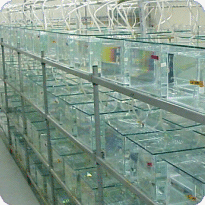

|
California: Title 22 CCR
This test is used to help determine
whether or not a sample should be classified as a hazardous waste under state of
California criteria, (these criteria are codified in Chapter 30 of Title 22 of
the California Code of Regulations, Section 66696). In accordance to these
regulations, the California Department of Fish and Game has developed a Hazardous Waste
Testing procedural guidance document, (entitled: "Static Acute Bioassay
Procedures for Hazardous Waste Samples"), that we follow when we conduct this
type of testing. This manual calls for a two-phase testing approach. Typically,
the screen bioassay is conducted first, and then, if needed, followed by the
definitive bioassay. Testing consists of mixing sub-samples with standardized
laboratory water to produce specific test concentrations. The screen test uses
two sample concentrations of 400 and 750 mg/l, which bracket the 500 mg/l state
criterion, and is conducted in duplicate. Ten fish are then added to each test
tank and monitored for 96 hours. Water quality parameters, such as dissolved
oxygen, pH, and temperature and mortalities are recorded daily. The final fish
survival rate is used to determine whether or not the sample passes state
criteria for non-hazardous waste, namely an LC50 greater
than 500 mg/l (in other words, the concentration necessary to kill half of the
exposed fish must be greater than 500 mg/1). If the sample narrowly fails the
screening test, (40% or greater mortality in the 750 mg/l concentration), a
definitive test is recommended. The definitive test uses five concentrations
bracketing the 500 mg/l criteria with the resulting data analyzed by computer to
determine the LC50. Fathead minnows are typically used in this test, however,
the golden shiner minnow or juvenile rainbow trout may be used, depending on
regional preference.SPECIAL CONDITIONS:There is no specified
holding time or temperature for samples under this protocol. We prefer samples
to be shipped cooled to 4oC. Approximately 100 grams of sample are
needed for testing, with 25 grams minimum for screen. Please notify laboratory
in advance for rainbow trout or golden shiner tests.
| |